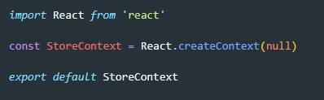
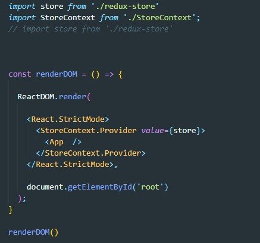
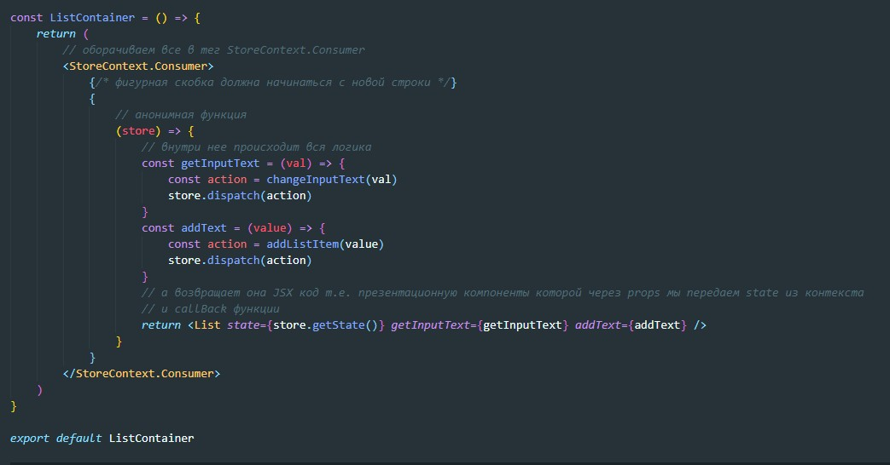

Для того что бы протащить state до компонента мы через props прописывали этот state в промежуточных компонентах. Существует ли способ протащить state до компонента минуя промежуточные компоненты (т.е. сразу из index.js в контейнерный компонент). Ответ да! В этом нам поможет Context. Контекст будет содержать в себе store и к нему смогут обращаться только дочерние компоненты того компонента где был объявлен контекст
Контекст создается в отдельном файле с помощью метода createContext библиотеки React. Метод должен в качестве аргумент получить дефолтное значение state. Можно передать null
Для того что бы все дочерние элементы App.js получили доступ до контекста, мы должны обернуть компонент App тегом StoreConext.Provider. Название в зависимости от того как мы назовем наш контекст (в примере мы назвали именно StoreConext при использовании метода createContext). Тег тегом StoreConext.Provider должен иметь атрибут value который получает в качестве значения store
Теперь нам нужно подключить к контексту контейнерную компоненту. Для того что бы контейнерная компонента приняла данные из контекста, нам нужно все то, что возвращает контейнерная компонента обернуть в тег StoreContext.Consumer
Внутрь этого тега мы помещаем JS код (т.е. ставим фигурные скобки). Внутри фигурных скобок мы пишем анонимную callback функцию, которая в качестве аргумента принимает то, что указано в атрибуте value тега StoreConext.Provider (d нашем примере - это store). Вернуть (return) эта функция должна JSX код. Вот как будет выглядеть контейнерный компонент
